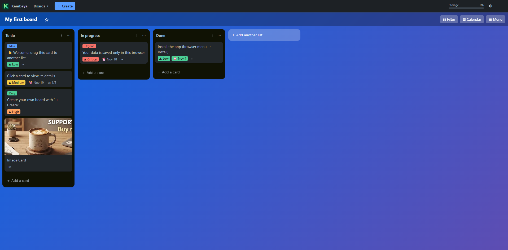
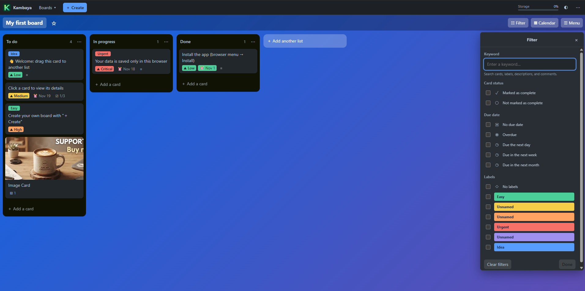
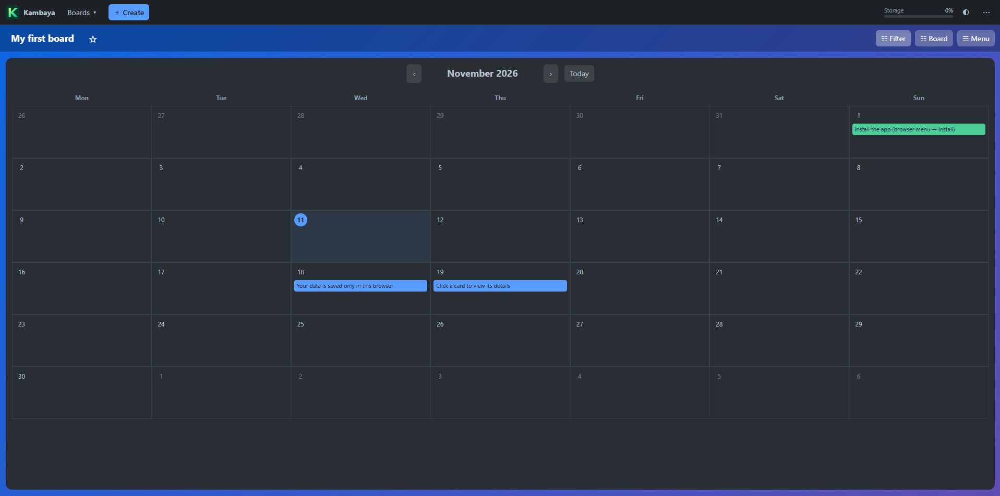
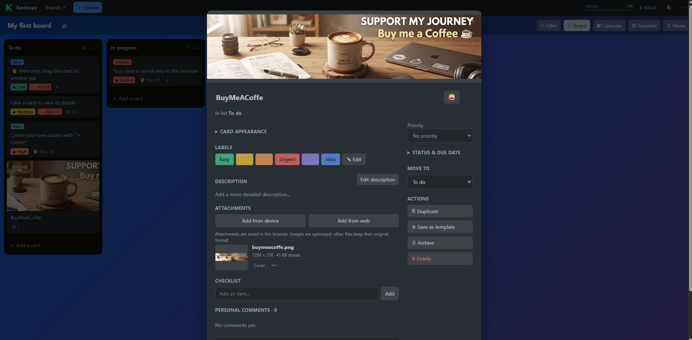
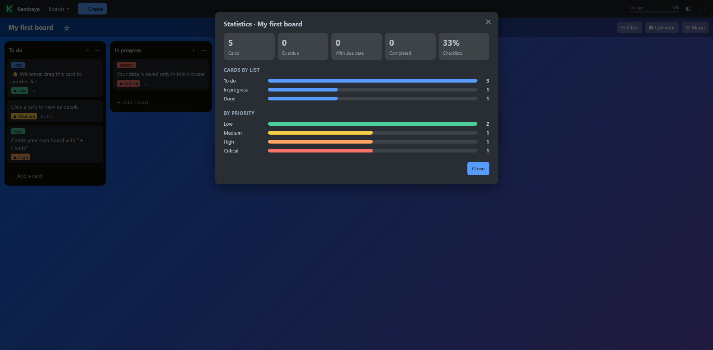

See the whole picture
Create boards and lists, move cards, and follow each project from first idea to finish.
01 / BOARDSFrom first ideas to finished tasks. Organize your projects your way in a visual, simple space that's always close at hand.

01 / MADE FOR YOU
Your plans don't have to live in a dozen places. Bring what matters together and find your own rhythm.
Create boards and lists, move cards, and follow each project from first idea to finish.
01 / BOARDSAdd due dates and switch to the calendar to see what's coming up.
02 / CALENDARUse priorities, labels, search, and filters to find what needs your attention now.
03 / FOCUS02 / YOUR WAY
From a quick list to a project full of ideas, Kanbaya helps you keep the context without losing sight of the big picture.
Bring the right work into focus with search and filters for status, due dates, and labels.

See due dates in a monthly view and plan for what's ahead.

Give every task more detail with Markdown descriptions, checklists, comments, and attachments.

See how cards are distributed across lists and priorities, and keep track of due dates.

At your own pace Set work-in-progress limits for your lists.
Useful shortcuts Move faster with your keyboard.
A look at progress See statistics for each board.
03 / YOUR SPACE, YOUR DATA
Kanbaya stores your projects locally in your browser. You don't need an account or a server to get started.
After the first load, you can reopen and edit your projects without an internet connection.
Use it in your browser or install it as a web app on supported devices.
Export your boards and import them again when you need them.
Data does not sync between devices. Browser storage can be deleted or evicted, so export backups regularly.
A GOOD PLACE TO START
Give yours a place to grow. Your next step is one click away.
Open Kanbaya